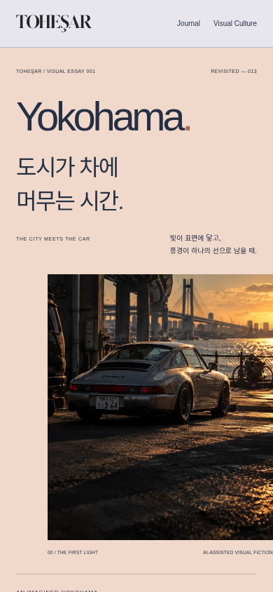
두 장의 리듬.
타이포그래피와 사진의 구역을 선명하게 나눈 방향. 단정하지만 iPhone에서는 사진의 등장이 늦어지고 자동차의 첫인상이 약해졌습니다.
 BUILD 014 / VISUAL REVIEW
BUILD 014 / VISUAL REVIEW자동차의 곡선, 사진 속 저녁빛, 작은 그래픽이 하나의 지면으로 이어지도록. 기존 콘텐츠를 보존하며 다듬은 TOHEŞAR의 실제 브라우저 화면을 비교합니다.
넓어진 사진이 먼저 은빛 차체와 수면의 빛을 보여줍니다. 제목은 사진의 경계에 걸리고, 피치빛 한글 문장은 차의 실루엣을 비켜 앉습니다. 이 장면은 별도의 로딩이나 애니메이션 없이도 완성됩니다.
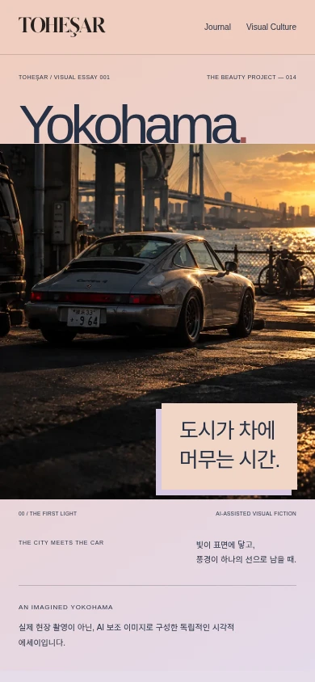
후보 B를 바탕으로 iPhone에서는 한 화면 안의 제목·차체·한글 문장 관계를 정리했습니다. 큰 화면에서는 사진 폭과 제목의 길이를 다시 조절해 시선이 차체에서 벗어나지 않도록 다듬었습니다.
실제 브라우저 캡처 / 390 × 844 CSS px
원본 사진 보존 · AI 보조 비주얼 픽션 표시 유지
색이나 글자 크기만 바꾼 시안이 아닙니다. 사진의 위치, 제목과 이미지의 접점, 한글 문장의 자리, 전체 밀도를 달리해 실제 브라우저에서 비교했습니다.

타이포그래피와 사진의 구역을 선명하게 나눈 방향. 단정하지만 iPhone에서는 사진의 등장이 늦어지고 자동차의 첫인상이 약해졌습니다.
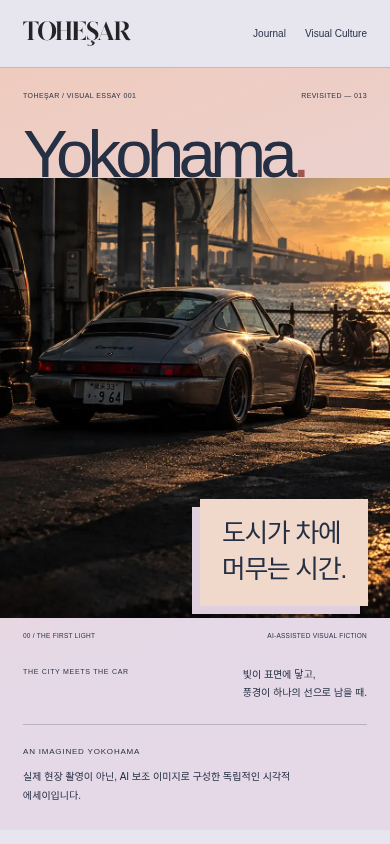
제목이 사진의 위쪽 경계에 걸리고, 한글은 피치빛 조각으로 사진 안에 놓입니다. 도시의 빛과 차체, 언어가 하나의 장면으로 읽혀 선택했습니다.
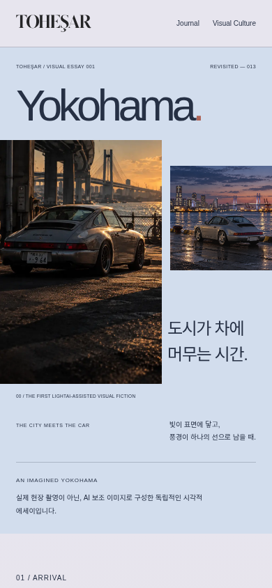
필름 편집처럼 이미지의 프레임을 나눈 방향. 작은 화면에서는 여러 프레임이 경쟁해 은색 차체와 노을의 집중력이 분산됐습니다.
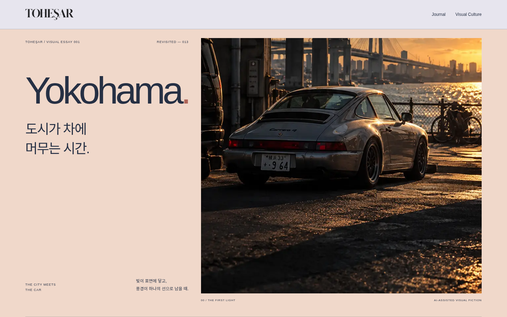
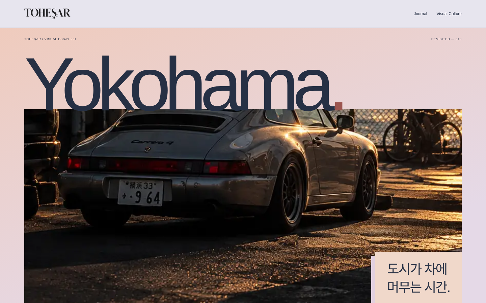
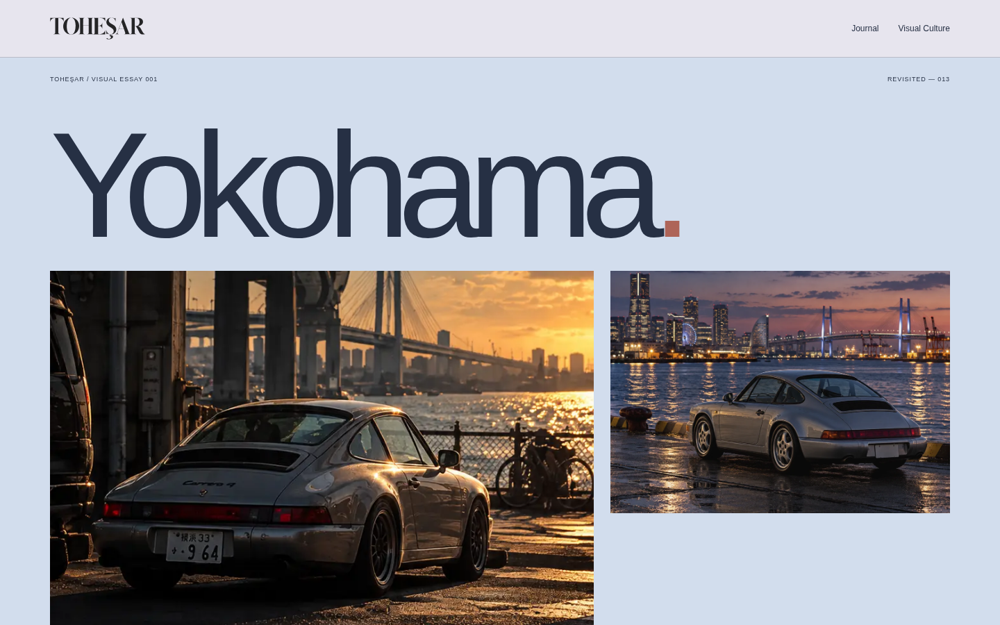
같은 원본 이미지와 기사입니다. 여백의 크기와 사진 비율, 제목의 위치를 바꾸고 색이 다음 지면으로 이어지도록 다듬었습니다. 각 이미지를 누르면 원본 캡처를 볼 수 있습니다.
평범하게 분리되었던 제목과 사진을 하나의 모바일 장면으로 연결했습니다.
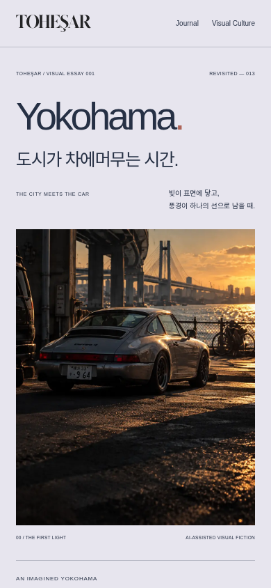
푸른 시간의 사진과 자동차 Wallpaper 지면을 가까이 연결했습니다.

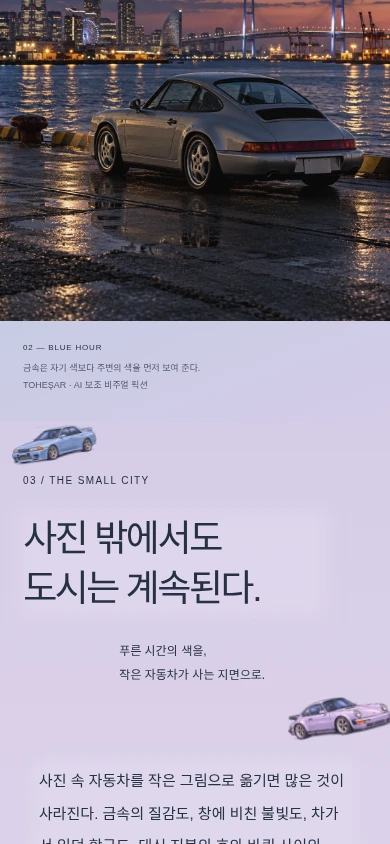
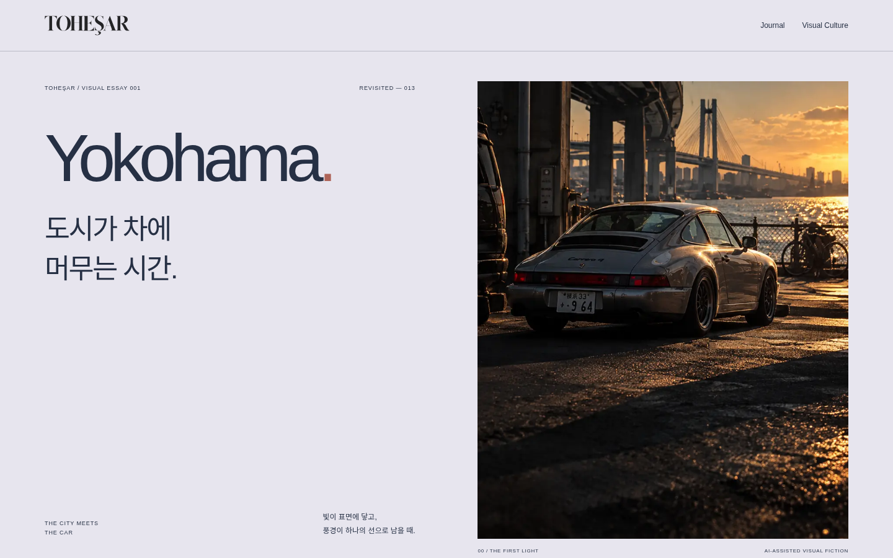
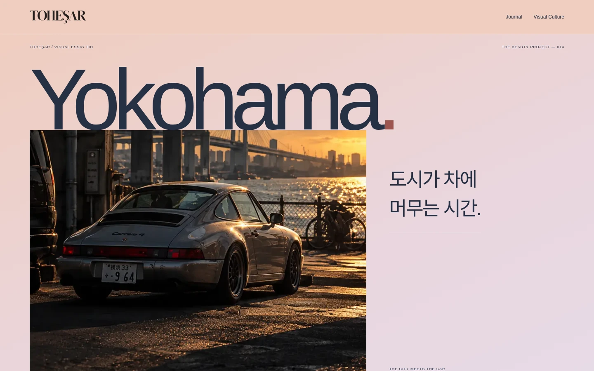
기존 8종의 자동차 그래픽을 보존했습니다. 원본 자체의 형태와 색은 충분히 매력적이었습니다. 일러스트를 가리던 처리와 배치를 조정해 작은 크기에서도 개성이 드러나도록 했습니다.
별도 전시 공간으로 옮기지 않고 문장 주변과 문단 뒤에 흩어진 원래 구상을 유지했습니다.
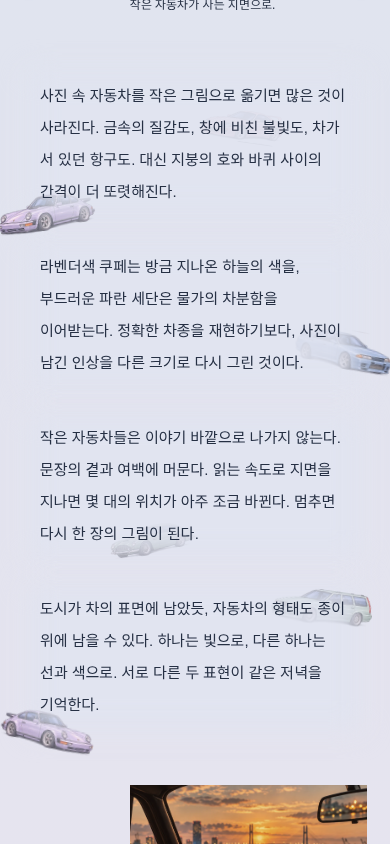
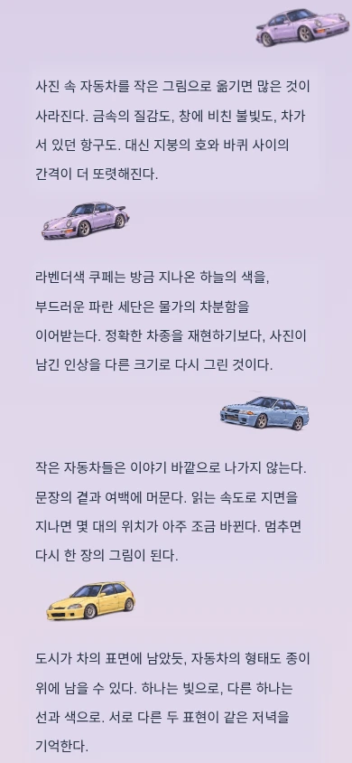
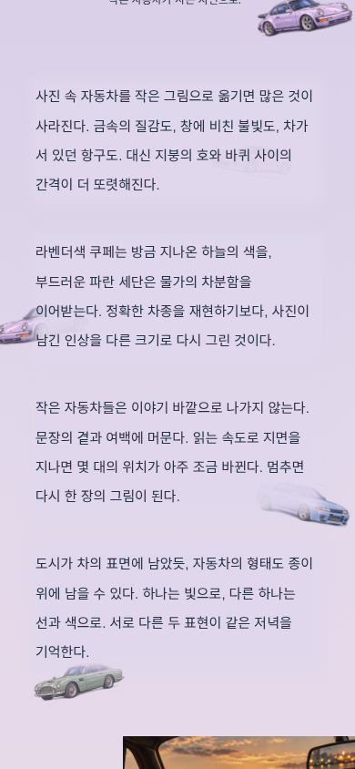
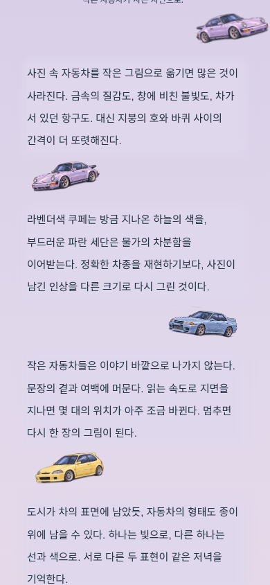
사진까지 흐리게 덮고 있던 출처 캡션의 배경 처리도 바로잡았습니다. 사진은 선명하게, 글 뒤의 보호막은 해당 지면 색과 같게 다듬었습니다. 스크롤 반응은 기존의 작은 이동을 유지하며, 모션 감소 설정에서도 정적인 지면이 성립합니다.
촘촘한 산세리프 마스트헤드, 차체가 크게 보이는 사진, 사진의 아래쪽에 걸린 피치빛 제목 지면. 기존의 기사·뉴스·Design Atlas·Issue·Visual Culture를 그대로 이어갑니다.
일반적인 사진-제목 나열에서 벗어나 사진과 한글 제목이 서로의 위치를 정하도록 했습니다.
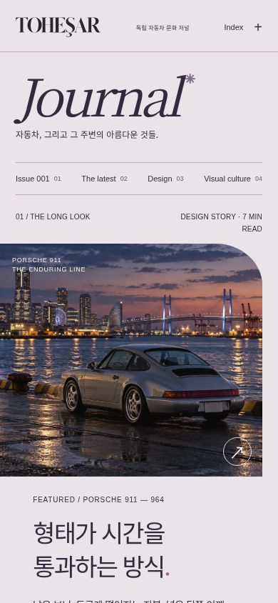
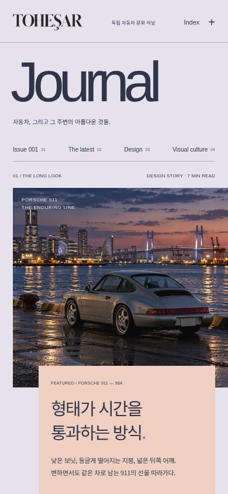
기존 ISSUE 001의 도입부와 연결 구조를 보존하고 주요 챕터를 다듬었습니다. 모든 차에 같은 효과를 복사하지 않고 곡선, 면, 비례, 긴 GT, 작은 그래픽이라는 서로 다른 성격을 표현했습니다.
곡선에 맞춘 아치, 사진 위에 걸친 911.
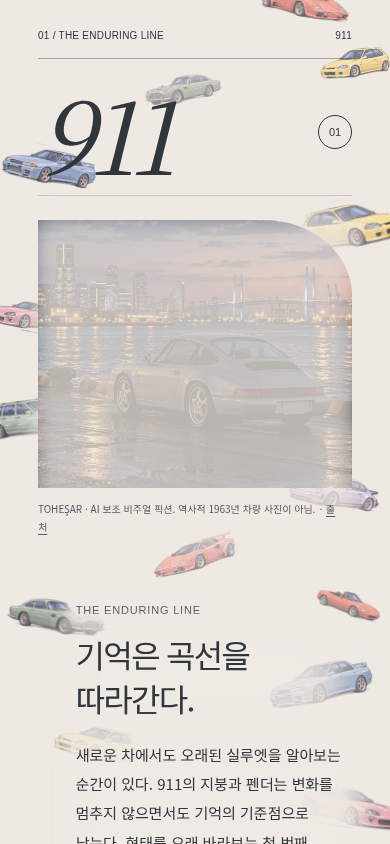
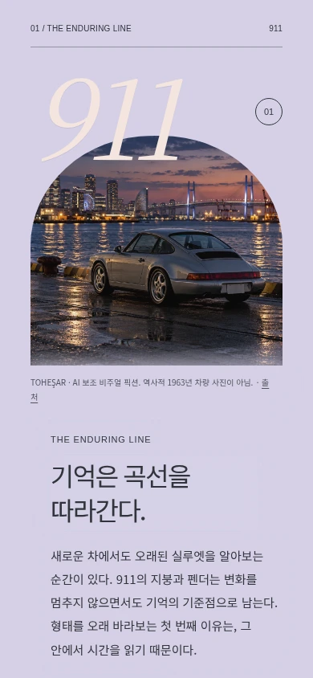
낮은 면과 날카로운 끝을 닮은 붉은 조판.
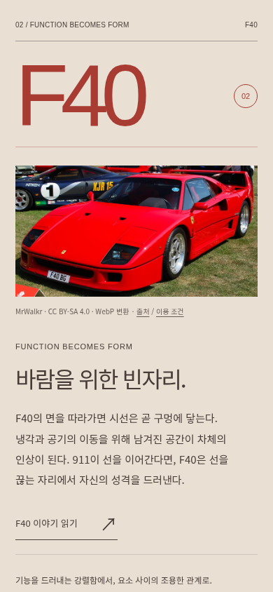
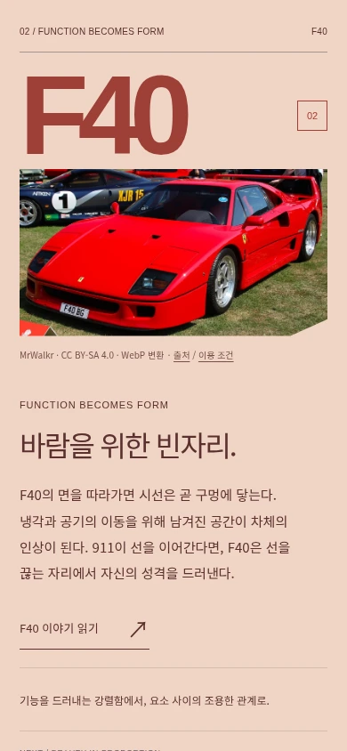
긴 측면 사진과 유려한 이름의 관계.
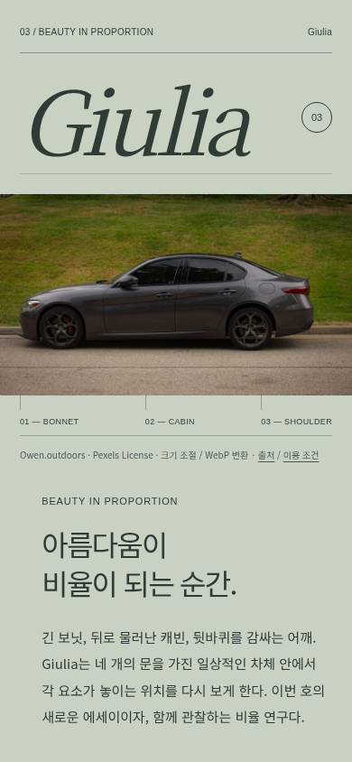
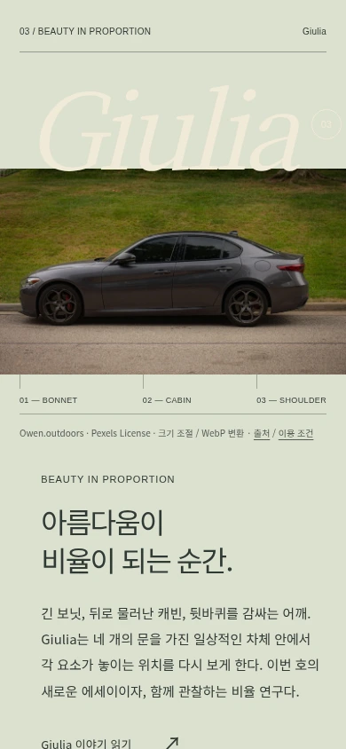
차체의 길이가 드러나는 넓은 블루 지면.
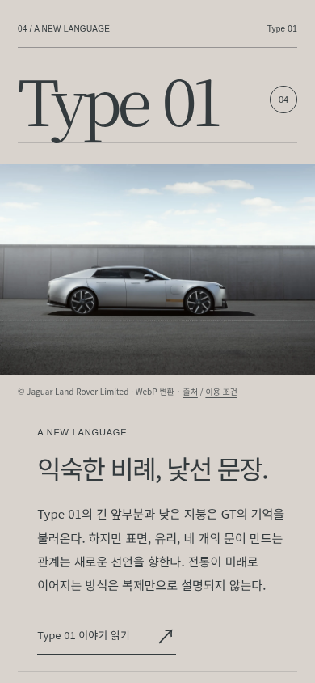
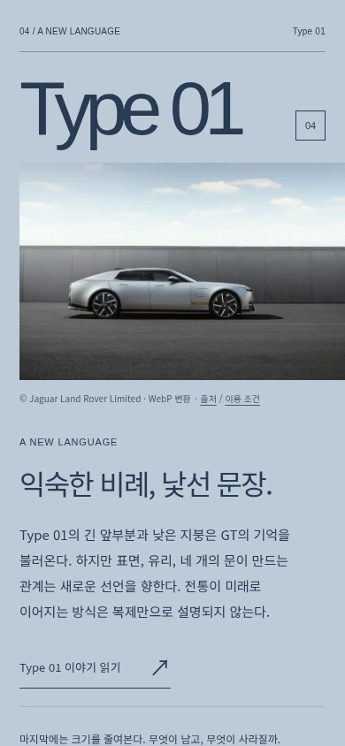
서로 다른 비율과 방향을 가진 작은 그래픽 세계.
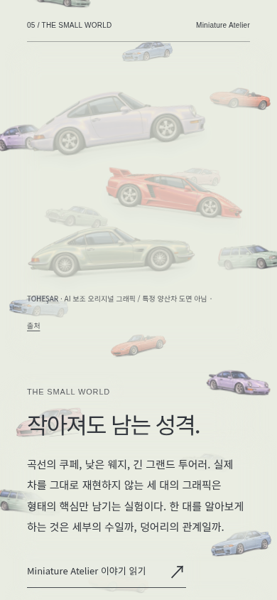
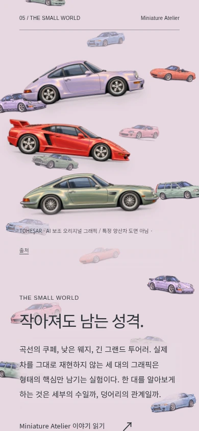
이 문서의 이미지는 실제 브라우저 캡처입니다. 디자인 목업이나 합성된 사이트 화면이 아닙니다. 자동화된 브라우저 검토와 실제 하드웨어 검증은 구분해 기록합니다.
기준: 7d327697ef999634ac831d5b0b005adb4d7cb7c7
새 브랜치: feature/tohesar-beauty-project-014
기본 화면 크기: 390 × 844, 430 × 932, 820 × 1180, 1180 × 820, 1440 × 900. iPhone 크기의 한 화면 구도를 우선하고 iPad 가로·세로와 데스크톱으로 확장했습니다.
Chromium 및 WebKit 자동화 렌더링과 기능 회귀 검증의 구체적인 결과는 제작 기록 및 함께 저장된 검증 자료를 참고하세요.
실제 iPhone·iPad 하드웨어의 Safari는 미검증입니다. 브라우저 에뮬레이션은 실제 기기의 스크롤 감각, 주소창 변화, 색 표현까지 보장하지 않습니다.
이 페이지는 BUILD 014 독립 미리보기의 시각 검토 자료입니다. 공식 사이트에 배포하지 않습니다.